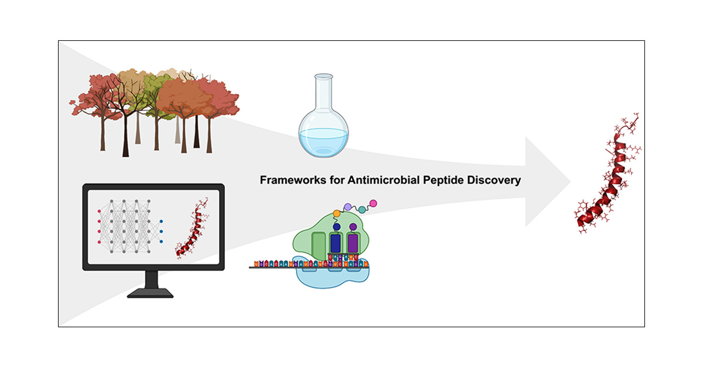
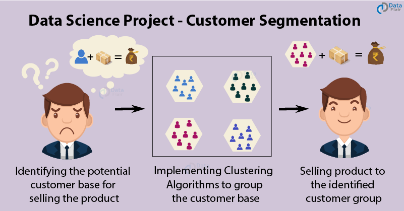

In this project, I developed a machine learning model using LazyPredict and a decision tree classifier to predict antimicrobial peptides. LazyPredict simplified the model training and evaluation process by automatically trying multiple classification algorithms and providing performance metrics. The decision tree classifier was chosen for its interpretability and ability to capture complex patterns in the data. The goal of the project was to accurately classify peptides as antimicrobial or non-antimicrobial, aiding in the discovery of potential candidates for antimicrobial therapy.


In this project, I have used RFM analysis (Recency, Frequency, Monetary) for segmenting the customer in the online retail dataset based on their purchase behavior. The dataset contains approximately 541,909 transaction,this analysis provides valuable insights into customer behavior and can help the company to improve customer retention and increase revenue
In this project, regression techniques were used to estimate the medical cost based on health and demographic data, achieving an R-squared value of 76%. Furthermore, classification techniques were employed to recommend appropriate insurance packages based on individual characteristics. The decision tree model demonstrated an accuracy of 88.22% in classifying the data, surpassing the accuracy of the KNN model, which achieved 72%. Thus, based on the classification results, the decision tree model proved to be the best classification model for the insurance dataset. .

In this project, I have used Twitter API, Fetch live tweets from twitter server about apple product, find Sentiments of people from those Tweets, also visualize tweets in word cloud .
In this project, I have created the linear regression model and deployed the house price predition model in the cloud like Render by creating web app.
I have created a NLP chatbot using Python and various libraries such as NLTK. The chatbot is designed to answer user questions related to subject Microbiology. The bot uses machine learning algorithms and natural language processing techniques to understand and respond to user queries. The code is well-structured and documented, making it easy to understand and modify. With its potential to provide valuable information to users. this NLP chatbot project demonstrates the power of technology to aid in public education..

In this project, I have used convolution neural network to classify cat and dog

In this project, I have analyzed the 12 months sales data using python

In this project, I have cleaned the housing data in SQL server.

Data Exploration of Covid19 Dataset in SQL Server.

This contains all my Tableau Dashboards.

Correlation of revenue generated by the movies with features like votes, rating, company name etc., using python in Jupyter notebook.
In this project, I have used R to create the multiple regression model in the insurance dataset.

In this project, I have created the regression model in R to predict the prices of the houses(Ames, Iowa) .

In this project I have used python to compare different machine learning models to predict red wine quality .

In this project I have used R to compare different machine learning models-KNN, Decision Tree, Random Forest to predict red wine quality .

Course: Data Exploration Analytics & Visualization (Fall 2022)
Project : [Analyzing Vaccine Adverse Events using Tableau].
Description:
Completed a data exploration & visualization project on vaccine adverse events using Tableau as part of a data visualization course.
Analyzed and visualized data from the Vaccine Adverse Event Reporting System (VAERS) database to gain insights into vaccine safety.
Tailored visualizations to different audiences, including children, health workers, managers, and analysts, adjusting complexity and level of detail accordingly.
Incorporated feedback mechanisms to gather insights and improve the visualizations, showcasing effective collaboration and iterative refinement processes.
.

In this project. I used different models to compare the predicted speed of pokemon based of different attributes .